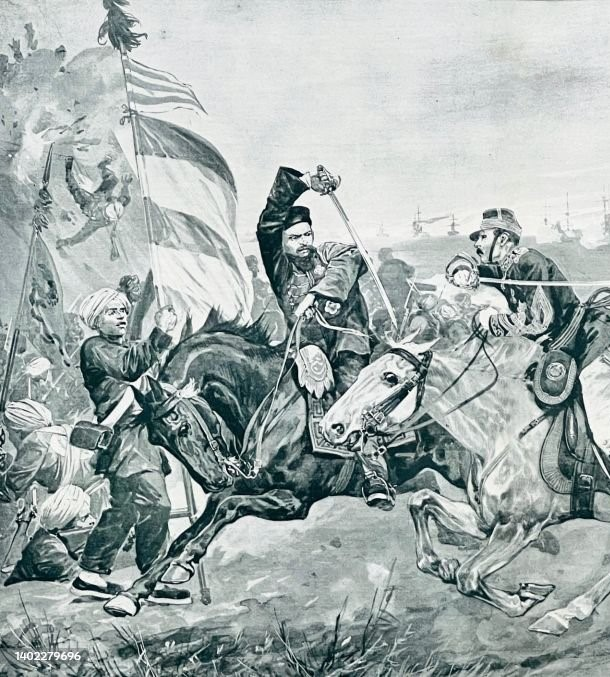

From Today's Featured Artical
Painting of the first day of battle,with HMS Namer in the center left
The naval Battle of Lagos took place between a British fleet commanded by sar Edward Boscawen and a French fleet under Jean-francois de La Clue-sabeam over 18-19 August 1759 during the Seven Year's War The french Madneeranean fleet successfully passed throug the Strait of Gibralter, but was sighted by a british ship.The british fleet in Gibralter was under going a major refit and left port amidst great confussion with mant ship delayed and sailing squadren. Aware that he was pursued La clue changed course,but half of his shiped failed to follow him in the dark.The british caught the french south west of the Golf of cadie fierce fighting encued and care french ship was captured.The british percued the remaining six french ship over night two managed to escape.the survivor attempted to shelter in neutral portuguese waters near lagos but Boscawen violated that naturally,capturing two of the ships and destroying the other two Full artical
Recently Featured:
Did you know...
Syangogue of Deal
Ronnie O'Sullivian
- Ronnie O'Sullivian with the World Snooker Championship defeating Kyren Wilson in the final
- ugrendan Joshua chiplegeis sets a new world record in the men's 5000 meters
- Israel and the United Arab Emirates agree to the establish diplomatic relations
- Pro-democracy protects intensify belaurs after the contested relection of incumbent President Alexender Lukashenko
- Other recent events
- Nominated an artical
Recently Deaths:
- ./index.html
August 18: Long Tan Day Austrilia 1966